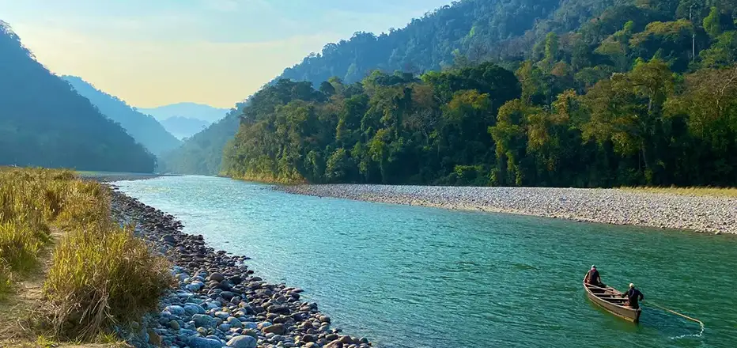

Must-Visit Places

Tawang & Monastery
Among the largest monasteries in India, set amid dramatic peaks near the Bhutan/Tibet borders; vibrant festivals and serene courtyards.
Culture
Heritage
Views
Access via Bomdila/Dirang over Sela Pass

Sela Pass & Lakes
High mountain pass (~4,160 m / 13,650 ft) dotted with alpine lakes; snowfall possible in winter—carry warm layers.
High Altitude
Scenic
Photography
Road conditions vary in storms—buffer time

Ziro Valley
Pine-clad hills, rice terraces and Apatani cultural landscape; pleasant weather Mar–May.
Culture
Nature
Light Treks
Central Arunachal (Hapoli)

Namdapha National Park
Vast Eastern Himalayan rainforest & tiger reserve near Miao; famed for biodiversity and birding.
Wildlife
Rainforest
Birding
Entry via Miao; permits/guide as applicable
Bonus: Mechuka meadows, Aalo, Dirang, Bomdila, Tipi & Sessa Orchid centres.